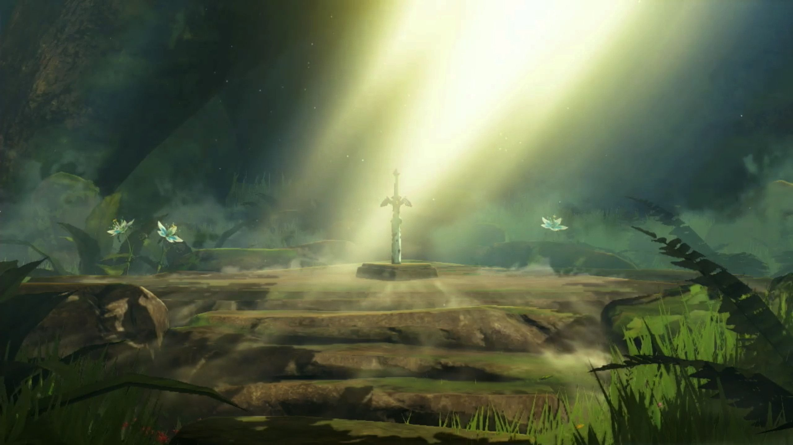

Approaching the final fight
After the divine beasts, it is time for Link to pull the master sword which was in ruined at the same time Link was 100 years ago. Zelda also placed the sword back into its pedastal to heal alongside with Link. Link makes his way through the maze that is the Lost Woods and finds the Deku tree which helps him retrieve more meories and pull the sword. Once all of Links memeories have been regained and he has the master sword to seal the evil, he makes his way through Hyrule castle. After fighting and sneaking his way through the massive castle, Link finally finds the holding room of Calamity Ganon and confronts him.
 WallPaperCave